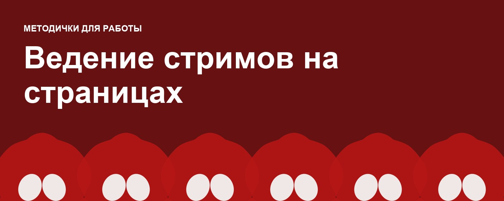
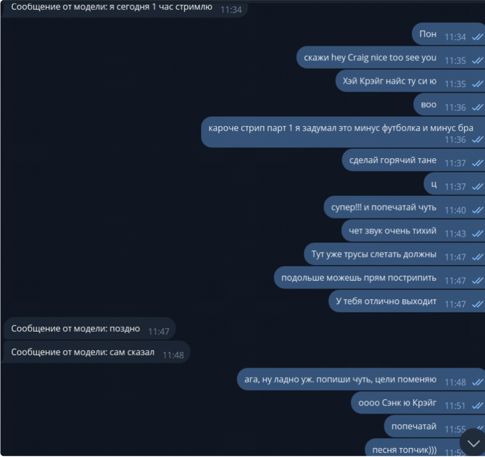
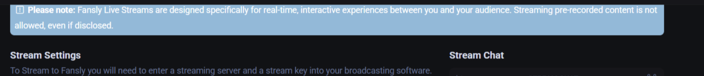
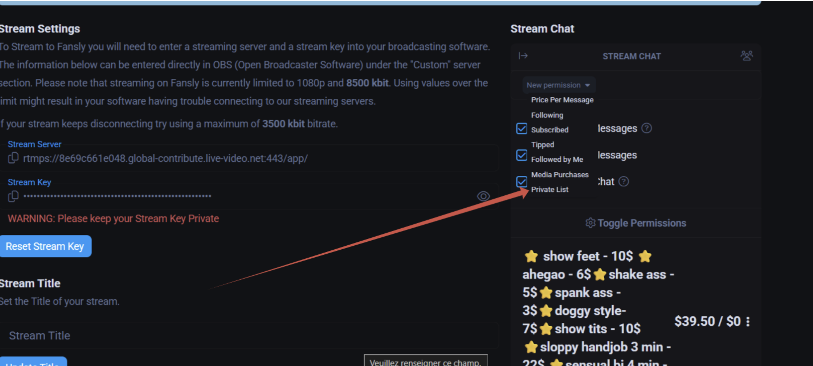

Ведение стримов на страницах
Как вести стримы?
Чек-лист подготовки к стриму:
- Связь с моделью через тг бота проверена и работает
- Передаем остальные страницы во время стрима коллегам по смене (кто с вами на смене и у кого нет стрима в это же время)
- Настройка новых целей (см. настройка целей)
- Подготовлена рассылка с анонсом (лучше рассылку делать одновременно с запуском, большинство ждать не будет и зайдет если увидит в моменте)
Общение с моделью:
- Некоторые модели по началу стесняются стримов, поэтому наша задача полностью расслабить и раскрепостить. Чем натуральнее и раскрепощённее она на стриме, тем больше денег несут мемберы.
- Очень важно вежливо и с уважением обращаться к моделям, в то же время не казаться через-чур формальным, общаясь с ней по-дружески
- Не стесняйтесь поддерживать ее, отмечать точки и позы, в которых было горячо, а так же подсказывать по звуку/свету/расположении камеры.
- Напоминайте о благодарности платежникам, если забывает.
- Если мем просит что-то нестандартное в дм – уточняйте у модели и продавайте!!

Пример общения с моделью
Настройка целей
- Цели на стрим находятся во вкладке Creator dashboard при нажатии на аватарку модели в правом верхнем углу интерфейса
- При нажатии на цель появляется редактор, в котором можно написать название и установить сумму для ее выполнения.
Максимальное количество целей – 3. - При выполнении целей нужно их обновлять, а не удалять и создавать новые. Увеличиваем цену и заменяем цель на следующую
Пример: после достижения цели sexy dance в 20$ переименовываем цель и ставим в amount 20$+сумма для новой цели - Цели ведем по принципу лесенки – чем больше денег собираем, тем горячее.
- Начинаем с раздевания/стриптиза, следующие цели всегда утверждаем с моделью (иногда забывают дилдо или не могут проникновение делать, поэтому уточняем, прежде чем ставить)
- Цели с прошлого стрима, которые были частично заполнены - можем не удалять, а переименовать и таким образом дать мотивацию мемберам на их быстрое закрытие в начале стрима
Примеры завлекающих целей
Sexy dance
Strip-tease
Ice on nipples
Suck titties (wet fingers on nipples)
Pussy play through panties
Середина:
Fuck me with dildo (saying your name)
Oily show
Make me wet (начало пусси плэя)
Lovense control for 5 mins
Blowjob
Spreading holes
Footjob
Концовка:
Fuck Dildo till i cum
Make me cum
Orgasm for u
Cum show
Double penetration
Lovense orgasm
Не стесняйтесь использовать интересные эмоджи для текста целей, чтобы сделать их ярче
Ведение стрима
На стриме у вас существует 3 способа контакта с мемберами для продажи:
- Модель может озвучить в лайве то, что вы ей напишите
- Чат стрима (просите модель сделать вид что она пишет и пишите в чат мемберу)
- Личные сообщения - ДМ (Также просите модель делать вид, что печатает, пока вы договариваетесь с мембром)
Периодически просим модель напоминать вслух на стриме, что впереди еще есть горячие цели и тип меню.
В чате стрима можно отвечать на более сложные вопросы, если модель плохо знает английский, а так же дополнительно тизить/продавать:
the first to tip 10$ from now gets the gift in DM(помогает запустить веселье, обычно как только начинается движуха начинает течь кэш)Only ..$ left to the next goal guys, let’s have some fun!! I will do it for ..$ now for u, honey(если в чате кто то хочет увидеть действие от модели)
ВАЖНО: не забываем просить модель «попечатать», если пишете в чат или отвечаете в ДМ, чтобы не создавалось рассинхрона и мемберы не поняли, что с ними общается чаттер
Ваши основные обязанности во время стрима:
В ДМ Обязательно отписывать новым фолловерам ибо во время стрима идет большой приток новых мемберов и нужно успеть обработать всех
- мы приветствуем нового мема по Имени и зовем его к нам на трансляцию прямо сейчас
Лучше всего сделать скрипт приветствия для стрима копировать его, подставляя имя каждого нового мема в него)
Пример: Wow Max thanks for following!
Dont skip my livestream right now and be my guest 💗
- Подписываемся на новых мемберов, которые оставили чаевые, если у них закрыты личные сообщения, просим модель поблагодарить их и сказать им вслух чтобы те подписались
- Во время стрима читать в чат, принимать в нем заказы за $ и передавать модели, а также банить неадекватов, которые
оскорбляют кого-либо. Нажимаем на значок 🚫 рядом с их именем - Менять цели своевременно при их заполнении, чтобы стимулировать мемберов на дальнейшую трату
- Подсказывать моделям лучшие позы, ракурсы,что лучше использовать, что снять в данный момент , как лучше дразнить мемберов, оценивая сообщения в чате, давая модели общее направление.
- Напоминать моделям о благодарности платников
на стриме - В конце стрима поблагодарить модель за работу, пройтись по чатам с платниками, обработать новых фолловеров и в конце пройтись по списку продаж и чаевых (добавить $ в имена, подписаться на платников, занести их в списки)
Настройка доступа к чату стрима
Заходим в creator dashboard – streaming
Нажимаем в окне чата справа Toggle permissions – new permission.
Выбираем условие для возможности писать в чат.


Что делать если модель сама ведет стрим?
- В начале стрима модели удаляем все старые рассылки и запускаем новую, содержащую в себе ссылку на стрим.
пример: my stream is on! Come for some fun 🤭 https://fansly.com/live/Nasttat1111)
- Выходим с анкеты, в разделе смены указываем, что вышли с анкеты модели на время стрима
(пример: - Мира стрим)
- По окончанию заходим обратно, удаляем рассылки и обрабатываем весь пришедший за стрим трафик. (Допускается обработка в одно сообщение вместо двух).
(пример: Thanks for follow 💗 Did you enjoy my stream? :)
- Обработку необходимо завершить в течение часа после окончания стрима.